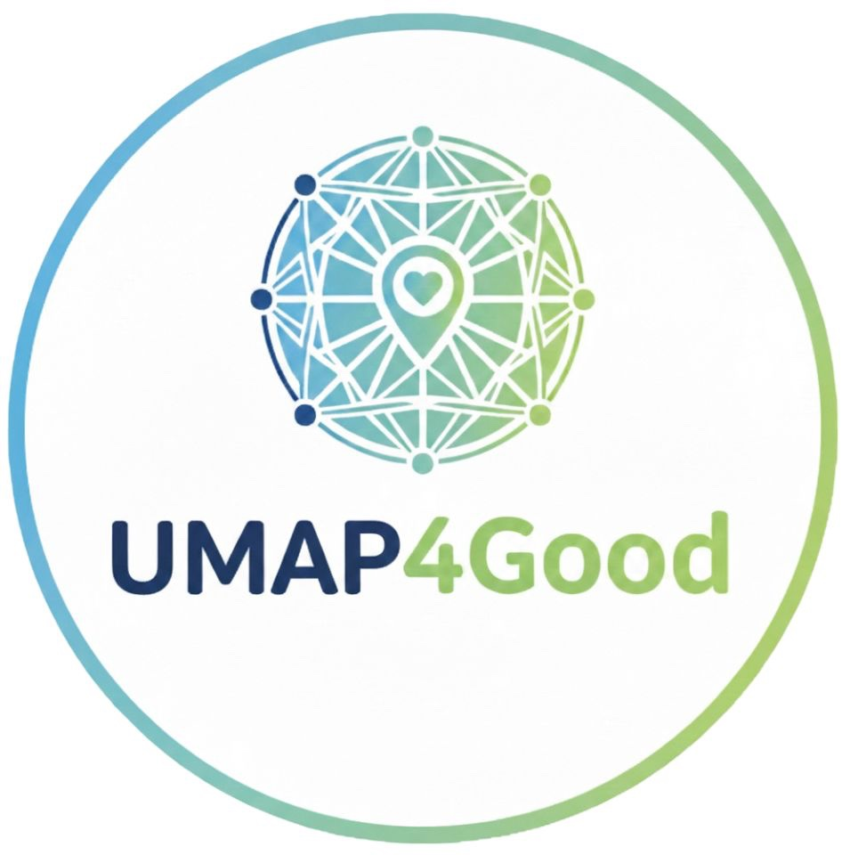

In an era where personalization technologies increasingly shape human decision-making, integrating sustainability and social good into user-adaptive systems has become an essential challenge. Building on recent advances in User Modeling, Personalization, and Adaptive Systems, this workshop aims to consolidate a research agenda focused on how personalization can support sustainable behaviors, ethical decision-making, inclusion, and positive societal impact. Personalized and adaptive systems influence users’ choices across many contexts—health, mobility, education, media consumption, and more. Their role in shaping long-term behavioral change positions them as key technologies for supporting the UN Sustainable Development Goals and broader sustainability initiatives. This workshop provides an interdisciplinary venue for researchers, practitioners, and policymakers to explore theoretical, methodological, and practical advances at the intersection of sustainability, personalization, and adaptive systems. Through presentations, discussions, and interactive sessions, the workshop aims to stimulate knowledge exchange, collaboration, and define emerging challenges for developing sustainable, inclusive, and socially responsible personalized systems.
First International Workshop on User Modeling, Personalization, and Adaptive Systems for Sustainability and Social Good
We invite submissions to the First International Workshop on User Modeling, Personalization, and Adaptive Systems for Sustainability and Social Good (UMAP4Good 2026), held in conjunction with the ACM UMAP 2026 conference.
UMAP4Good 2026 is an in-person event.
In an era where personalization technologies increasingly shape human decision-making, integrating sustainability and social good into user-adaptive systems has become an essential challenge. Adaptive systems influence choices across many contexts, including health, mobility, education, and media consumption, positioning them as key technologies for supporting the UN Sustainable Development Goals. UMAP4Good 2026 provides an interdisciplinary venue to explore how personalization can support sustainable behaviors, ethical decision-making, and positive societal impact.
We welcome submissions focused on sustainability perspectives, including but not limited to:
We welcome works at various stages of development, including applied systems, empirical results, or theoretically grounded positions. All submissions must be written in English and follow the CEUR template and LNCS guidelines. The review process is single-blind.
Submission Categories: We welcome full research and reproducibility papers, short papers, and extended abstracts.
Submissions will be handled electronically through the Microsoft CMT platform.
Paper can be submitted here.
The Microsoft CMT service was used for managing the peer-reviewing process for this conference. This service was provided for free by Microsoft and they bore all expenses, including costs for Azure cloud services as well as for software development and support.
Each paper must include a mandatory Declaration of Generative AI, in accordance with the CEUR-WS Generative AI Policy.
All deadlines are 11:59 PM Anywhere on Earth (AoE = UTC−12) unless otherwise noted.
The full workshop program will be announced after the review process is complete. Check back for invited speakers, spotlight talks, and panel discussions.
The schedule, invited speakers, and list of accepted papers will appear here after notifications are sent.